This module is derived from content in chapters 11-13 of The Selenium Guidebook Java Edition By Dave Haeffner._ _This module guides you through creating a separate BaseTest file where the root level before()andafter() hooks will live for each test, as well as a _Driver Factory _which creates the build() and quit() functions used for each instance of a test. Users will work through creating a config file to store the environment variables specifying in which environment your test is run, and modify the base page to check & pull environment variables from config. Last but not least, add in some features to make your tests' results easier to read and debug using the Sauce Labs platform.
Objectives
- ** **Analyze and plan test suites, learning how to balance the size and maintainability (ability to check failed tests) against the amount of features you want to test, as well as the level of abstraction you want to use to make modular objects to use in your test suite
- Learn about the different categories and types of tests. Understand which types of functional tests one uses Selenium for and how the different types and categories of tests are related
- Learn about Root Level Hooks that handle the universal rules
before()andafter()that all tests use, and that you can separate the common functionality that all tests use with these methods in a separate file (such asBaseTest.java) to be used with each test - Understand how to create a file that configures a test environment, and how it is used with
BaseTestandBasePageobjects to create a template from which each test is built - Identify and fix problems in test suites such as poor locators, silent failures, and too much functionality in a single class
- Choose and separate imperative language into separate objects and pages, and use the simplified commands created in that class with other tests to write code that is easier to read, maintain, and declarative in nature
- Create a
BaseTestthat creates all of thebefore()andafter()functionality each test uses to spin up and tear down a test - Create a
Configfile that sets the W3C capabilities forBaseTestto set up the environment for each, which set up variables for the environment, that dictate what your test is run in. - Set up a
baseURLvariable inConfigthat points to the app you are running tests on in theBasePage, and remove hard-coded URLs from other page objects, allowing you to specify just a sub-domain from page objects - Update your Sauce Labs credentials on your machine, then add functionality in your config file, using the sauceOption capabilities to run your tests on Sauce Labs
- Add variables and logic to your
BaseTestto pass information such as the test name, and pass or failure status to the Sauce Labs dashboard
In testing, both automated and manual, there are several different types of tests. Not all types of tests are mutually exclusive. For example, when doing regression testing, you may use unit tests, and unit tests can be used as a piece for an integration test.
Functional vs Non-Functional Tests
These two types of tests are ways to categorize tests by what they are testing. Functional tests check to see if a feature is or is not working, nothing more (e.g. did I log in or not log in?). Non-functional testing typically helps measure how much and how well an application is performing, enabling performance testing that helps teams understand and predict whether the software and features will work as expected, at scale. An example would be load testing, to see if the test runs as expected with many simultaneous users or volume testing. Sauce Labs does front-end functional testing, as well as non-functional testing.
Source imgur
Selenium is most used for functional testing using a browser. Types of functional tests include unit testing, UI testing, regression testing, integration testing, and more.
Unit Tests
Unit tests are the smallest, simplest possible type of test you can do. They test one single action on one single page/ application, and nothing more. Often these tests are written and executed on your local machine to validate that each ‘piece' of a more complex test works.
The typical structure for a unit test is:
- Set up the test data. (Given "x" condition".)
- Call the class you are testing. (When "y" behavior happens.)
- Assert that the expected results are returned. (Then "z" expected change is returned.)
Integration Tests (Service Tests)
Much of the time, when you write test code, it's not just one application you are testing, but many. As an example, if you were to sign up for Netflix, you would have to sign up on their website, send and receive information from their user management software (store user information to a database), as well as send and receive information from the software that processes their payments. Integration tests if and how these different services function together as a whole.
Many times integration tests can be formed from groups of unit tests. You can think of an integration as combining API tests with unit and UI tests to test how the entire service works.
UI Tests
A UI Test is a test of the visual interface a human user would interact with. Selenium is very well suited to these kinds of tasks. You can test the layout and behavior of a test easily, as well as track the usability of user flows. Many times the UI test can give insight into if an app is functioning on other layers. As an example, if you see an ‘error message' in the UI when you log in, you can tell that something went wrong when trying to submit the username and password for authentication.
Regression Tests
A specific set of tests that verify that the changes being made (new features) don't break your application. Regression testing is more of a methodology than a specific way to write a test. These tests can include unit and integration tests, but the difference here is this set of tests is created with the purpose of checking to make sure a change doesn't break the application.
End-to-End Tests
Similar to system testing, E2E tests can include just following a user's workflow in a visual interface, or include everything that occurs in an application environment, creating a situation that mimics real-world use. This includes actions such as interacting with a database, using network communications, or interacting with other hardware, applications, or systems if appropriate along a specific user flow.
Black Box vs. White Box Testing
White Box testing is a type of testing you do when you can see and understand all of the inner workings of an application and it's source code. Black Box testing is testing that is done from the end-user perspective, without any knowledge of the internal structure of application code. A good example of this is testing a workflow on the user interface of a web application. It is reasonable to assume for a login test, that if you enter the correct username and password, click submit, then get access to the platform, that the code for making this happen on the back end is also working.
Headless Testing
This type of testing refers to a code-based approach to testing web applications. When a human user is manually testing an application, they are looking at the visual browser interface with items you can see, click, and interact with. Headless testing is done by a robot that doesn't use the visual component of a browser, and instead does all interactions through communication with the codebase and other services that make up an application. Sauce Labs also provides headless user testing.
Now that you have some tests and page objects, we'll want to start thinking about how to structure our test code to be more flexible and maintainable. Ensuring that our code is reusable, and can scale to as many tests as you need, requires some additional elements & abstractions.
In a test suite, when you specify before and after hooks outside of a test class they are used globally for all tests. These are referred to as_ root-level hooks_. Every test that you write will use the before() andafter()methods to perform the same set of actions to set up and tear down the test, so it makes sense to store these in one place so you can make changes in one place, instead of within each and every test.
Part 1: Root Level Hooks
We'll start by using a separate class for Selenium setup and teardown out of our tests, placing the file in a central directory.
We'll create three things.
- A class that will contain the creation and destruction of our Selenium instances (known as a Base Test)
- A helper that all tests will pull from to do the basic things each test should do such as
before()andafter()from the JunitExternalResourcerule- These will be annotated with
@Overridewhich will execute prior to the@Beforeand@Afterannotations in individual tests
- These will be annotated with
- Update your login and dynamic loading tests to inherit from the base class and utilize the setup and teardown from within the base class
Create a new class in the tests project names BaseTest.java.

OpenBaseTest.javain your IDE and paste in the following:
// filename: tests/BaseTest.java
package tests;
import org.junit.Rule;
import org.junit.rules.ExternalResource;
import org.openqa.selenium.WebDriver;
import org.openqa.selenium.chrome.ChromeDriver;
import org.openqa.selenium.chrome.ChromeOptions;
public class BaseTest {
protected WebDriver driver;
@Rule
public ExternalResource resource = new ExternalResource() {
@Override
protected void before() throws Exception {
System.setProperty("webdriver.chrome.driver", "/Users/lindsaywalker/Documents/chromedriver");
ChromeOptions browserOptions = new ChromeOptions();
driver = new ChromeDriver();
}
@Override
protected void after() {
driver.quit();
}
};
}
Notice the new JUnit annotation called @Rule which contains the JUnitExternalResources rule. This rule has before() andafter() methods that are used inside the @Override annotations.
These methods are implemented instead of the @Beforeand @After annotations, which you need to save for use (they can only be used once per test) within our test objects. Learn more about JUnit Rules here.
Now you need to modify your test objects to inherit what you created in the BaseTestclass. Inside TestLogin.java, you'll get delete the following:
- The
@Afterannotation and the use of it, since thequit()method was all that was in there, and is now used taken care ofBaseTest.java - Creation of the
Webdriverinstance - The instantiation of the
ChromeDriverand the options
The newTestLogin.java file should only contain the following:
//filename: tests/TestLogin.java
package tests;
import org.junit.Before;
import org.junit.Test;
import org.openqa.selenium.WebDriver;
import pageobjects.Login;
import static org.junit.Assert.assertFalse;
import static org.junit.Assert.assertTrue;
public class TestLogin extends BaseTest {
private WebDriver driver;
private Login login;
@Before
public void setUp() {
login = new Login(driver);
}
@Test
public void succeeded() {
login.with("tomsmith", "SuperSecretPassword!");
assertTrue("success message not present",
login.successMessagePresent());
}
@Test
public void failed() {
login.with("tomsmith", "bad password");
assertTrue("failure message wasn't present after providing bogus credentials",
login.failureMessagePresent());
}
@Test
public void failed2() {
login.with("tomsmith", "bad password");
assertFalse("success message was present after providing bogus credentials",
login.successMessagePresent());
}
}
Next, you will make similar changes to TestDynamicLoading.java. First, delete the following:
- The
@Afterannotation and the use of it, since thequit()method is now taken care of inBaseTest.java - Creation of the Webdriver instance
- The instantiation of the
ChromeDriverand the options
The new TestDynamicLoading.javafile should only contain the following:
// filename: tests/TestDynamicLoading.java
package tests;
import org.junit.Before;
import org.junit.Test;
import pageobjects.DynamicLoading;
import static org.junit.Assert.assertTrue;
public class TestDynamicLoading extends BaseTest {
private DynamicLoading dynamicLoading;
@Before
public void setUp() {
dynamicLoading = new DynamicLoading(driver);
}
@Test
public void hiddenElementLoads() {
dynamicLoading.loadExample("1");
assertTrue("finish text didn't display after loading",
dynamicLoading.finishTextPresent());
}
@Test
public void elementAppears() {
dynamicLoading.loadExample("2");
assertTrue("finish text didn't render after loading",
dynamicLoading.finishTextPresent());
}
}
NOTE
–
Final Code
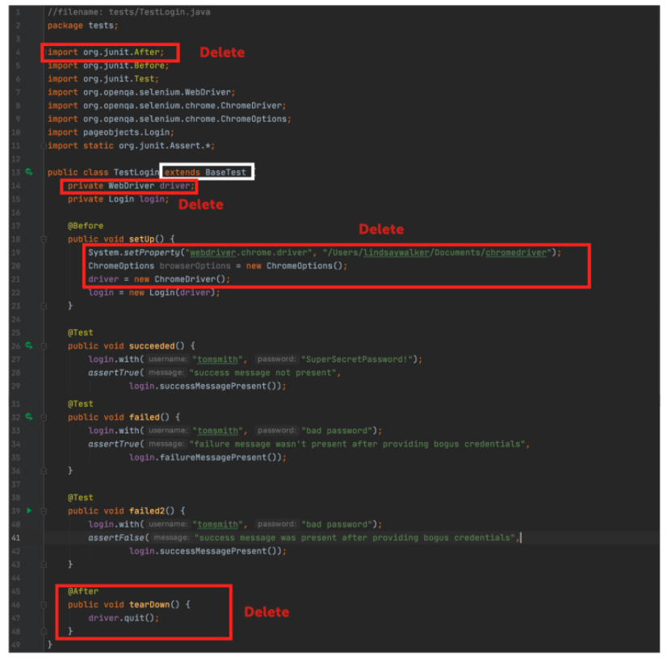
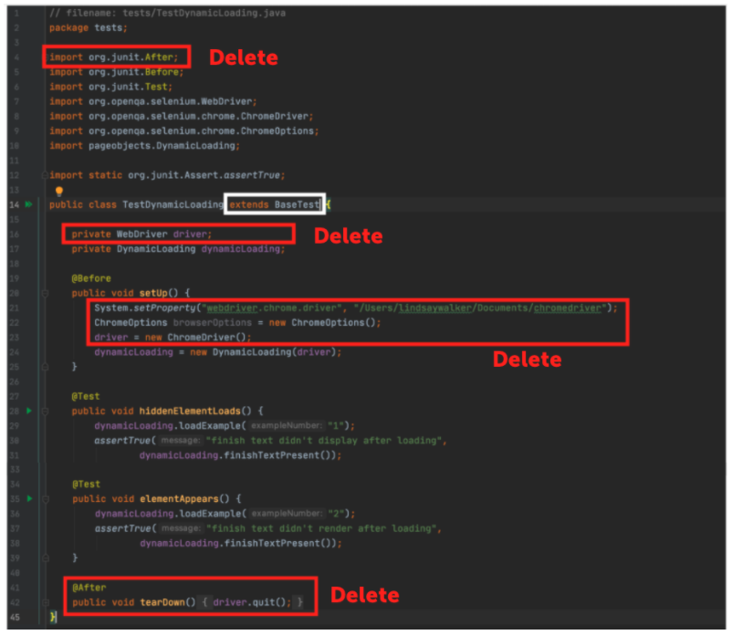
Part 2: The Config File
Typically, tests are run against different environments such as a local, test, staging, or production. We'll specify which environment you are using with a base URL in a separate config file (since the sub-domains such as /Login will stay the same, it will be easier to change testing environments in just the config file).
Create a new class in the tests directory called Config.java:

Inside of the class, you specify ourbaseUrl variable and have it fetch a runtime property of the same name. If there isn't one specified, the default will be used: "http://the-internet.herokuapp.com".
Notice that the variable is final which makes it immutable, since you don't want configuration values to change after our tests start running.
// filename: tests/Config.java
package tests;
public class Config {
public static final String baseUrl = System.getProperty("baseUrl", "http://the-internet.herokuapp.com");
}
Now you need to update the Base page object to use the URL you specified in Config.java. FIrst, update the visit method tin Base.java:
// filename: pageobjects/Base.java
// ...
public class Base {
private WebDriver driver;
public Base(WebDriver driver) {
this.driver = driver;
}
public void visit(String url) {
if (url.contains("http")) {
driver.get(url);
} else {
driver.get(baseUrl + url);
}
}
// ...
Next, you can import Config so you can use the baseUrl method:
// filename: pageobjects/Base.java
// ...
import static tests.Config.*;
Final Code
You can see the final code here. The Changes to Base.java should look like this:

Abstraction and Non-Duplication
Thus far you have prepared our test suite well to be maintainable. When you have things like the setup and teardown used for all tests in one place, making changes to this becomes a lot easier. Not duplicating (re-writing the same) code and abstracting into files like the driver factory, spec helper, and base page mean that you won't have to re-write that code each time you write a new page or test object, or go make changes to all those files when you need to modify something.
Video
Watch the video 4.04 Non-Duplication an excerpt from Sauce Labs' Tech Talk by Nikolay Advolodkin
Part 1: Running Tests in Different Local Browsers
Adding Drivers to Your Project
WebDriver works with each of the major browsers through a browser driver which is (ideally but not always) maintained by the browser manufacturer. It is an executable file (consider it a thin layer) that acts as a bridge between Selenium and the browser.
Since you have been running tests locally, it works just fine to have the drivers on our machine, however, we'll be moving this to the cloud soon, so you should send the driver files with it. Under the driver directory in your project, right click and choose New > Package, then name it drivers.

Find the directory in your finder, and download both the most recent Chromedriver and the Geckodoriver for Firefox. First open each browser and check which version you are using for Chrome. For Firefox, download the latest version of the driver and the browser version will be added. _It is important to take note of the version you have of each. Write it down right now! _In this example, I have Chrome 85.0 on my machine, so I will download that driver version.
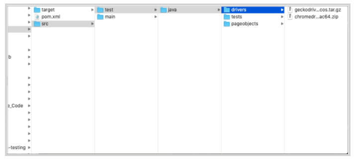
Download the latest version of each and save them in the drivers directory under where you have your test suite saved. Next, double click on the compressed files to unzip them. You should see chromedriver and geckodriver in your file directory.
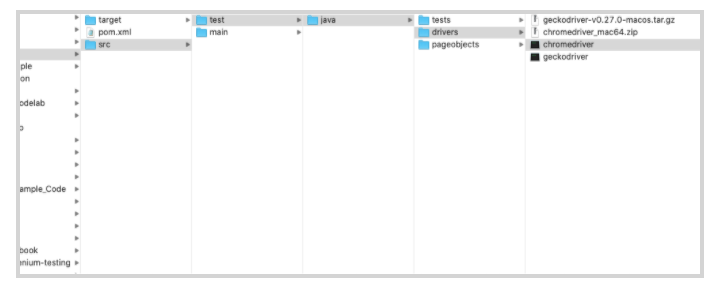
Set Browser in Config File
The first thing you will do is set the browserNamein Config.java. Under the baseUrl variable, add a new one called browserName. This will give a default of Chrome, however when you run the test with Maven, you can still specify which one you will use.
// filename: lib/config.java
// ...
public static final String browserName = System.getProperty("browserName", "chrome");
}
Now you will create a new path to the files you installed as a part of your test suite. In BaseTest.java , update the file path in the System.setProperty()method and driver inside of the before() method, inside the first @Overrideannotation:
// filename: lib/config.java
// ...
@Override
protected void before() throws Exception {
System.setProperty("yourdriver.chrome.driver", "src/test/java/drivers/chromedriver");
ChromeOptions browserOptions = new ChromeOptions();
driver = new ChromeDriver();
}
}
Try running your tests in IntelliJ just to make sure this new filepath works.
NOTE
–
Part 2: Run your Tests with Geckodriver
First, at the bottom of the list of dependencies in the pom.xml file (right above the closing </dependencies> tag):
// filename: pom.xml
// ...
<dependency>
<groupId>org.seleniumhq.selenium</groupId>
<artifactId>selenium-firefox-driver</artifactId>
<version>3.141.59</version>
</dependency>
// ...
You need to import thebrowserName variable from Config.java.At the bottom of your import list in BaseTest.java, add in:
// filename: tests/BaseTest.java
// ...
import static tests.Config.*;
Update the System.setProperty()method in BaseTest.java and driver inside of the before() method, inside the first @Overrideannotation:
// filename: tests/BaseTest.java
// ...
@Override
protected void before() throws Exception {
if (browserName.equals("chrome")) {
System.setProperty("webdriver.chrome.driver", "src/test/java/drivers/chromedriver");
ChromeOptions browserOptions = new ChromeOptions();
driver = new ChromeDriver();
} else if (browserName.equals("firefox")) {
System.setProperty("webdriver.gecko.driver",
System.getProperty("webdriver.gecko.driver", "src/test/java/drivers/geckodriver"));
driver = new FirefoxDriver();
}
}
In BaseTest.java you will also need to make sure you have imported the Firefox driver:
// filename: tests/BaseTest.java
// ...
import org.openqa.selenium.firefox.FirefoxDriver;
// ...
Run your test with intelliJ. Because of the way the config file is set up currently, you should see your tests run and pass in Chrome. Next, make a change to config.javaso that it will run firefox by changing the second parameter in the browserName variable from 'chrome' to 'firefox'.
// filename: lib/config.java
// ...
public static final String browserName = System.getProperty("browserName", "firefox");
}
Final Code
You can see the final code here. The new code should look like this:
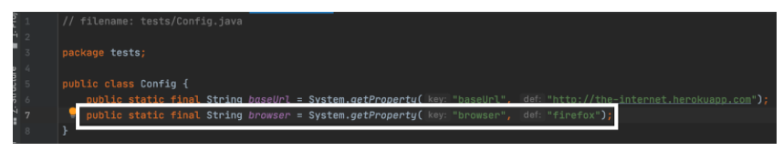
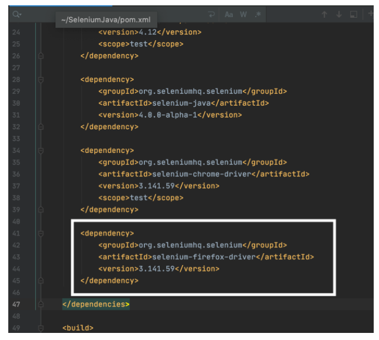

Quiz
In this lesson you are going to learn how to move the test suite that you have written from your local machine onto the Sauce Labs cloud provider. They maintain a set of real and virtual devices, as well as a Selenium grid that you can use to run your test in almost any environment. There are many reasons this is advantageous:
- You can use virtual machines (without having to set it up on your own machine)
- To test older versions of operating systems
- Test browsers that only run on older operating systems.
- You don't have to provision all the different kinds of virtual machines you will need yourself
- You don't have to set up and maintain the Selenium Grid that will coordinate the test across all of these different machines
To do this you are going to need something called the Selenium Grid and the RemoteWebdriver. The Selenium Grid lets you distribute test execution across several machines and you connect to it with Selenium _RemoteWebDrive_r.
You tell the Grid which browser and OS you want your test to run on through the use of Selenium's class object MutableCapabilities, and its various subclasses for specific browser options (ChromeOptions, FirefoxOptions, etc.) Sauce Labs has specific language bindings that act as wrappers for supported programming languages.
Part 1: Update Desired Capabilities
In theConfig.java file, you are going to communicate the settings for our test environment with the W3C _Capabilities_, required for every Selenium test.
In addition, you need to define some variables for your tests to be able to communicate with Sauce Labs:
// filename: tests/Config.java
package tests;
public class Config {
public static final String baseUrl = System.getProperty("baseUrl", "http://the-internet.herokuapp.com");
public static final String host = System.getProperty("host", "saucelabs");
public static final String browserName = System.getProperty("browserName", "chrome");
public static final String browserVersion = System.getProperty("browserVersion", "75.0");
public static final String platformName = System.getProperty("platformName", "Windows 10");
public static final String sauceUser = System.getenv("SAUCE_USERNAME");
public static final String sauceKey = System.getenv("SAUCE_ACCESS_KEY");
}
Notice the new variables you have added:
hostenables us to specify whether our tests run locally or on Sauce Labs. Right now, the host is either"saucelabs" or"localhost"- The Sauce Labs Test Configuration Options contains information for each specific test. You assume you may pass in unique usernames and access keys
browserNamespecifies the browser for a test.browserVersionspecifies which version of the browser for a testplatformNamespecifies the operating system for a test.usernameis the username you have created for Sauce LabsaccessKeyis generated (and can be regenerated) in your user settings in Sauce Labs
Final Code
Notice how many of the capabilities are grey in this example, since they aren't yet use in the code: 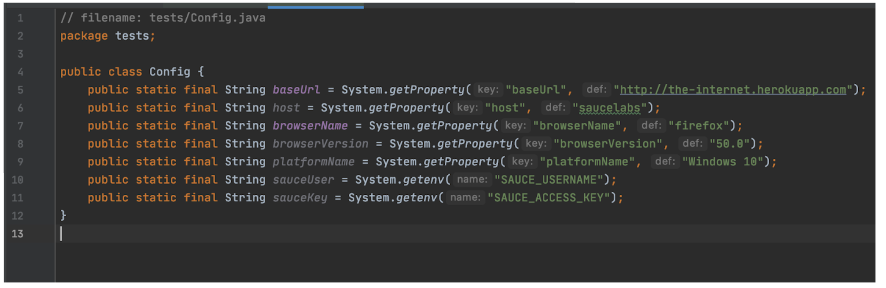
Setting up your Sauce Labs Account
You'll need an account to use Sauce Labs. Their free trial offers enough to get you started. And if you're signing up because you want to test an open source project, then be sure to check out their Open Sauce account.
Visit http://app.saucelabs.com/. You can create a free trial account if you haven't been assigned one.

Go to Account> User Settings to find your username and access key.

You will need to set up your username and access key on your machine's environment variables either in your bash profile (Mac/Linux) or in the system properties (Windows).
To learn more about setting up environment variables, you can see the article here.
Video
Watch This Video to See how to set up your Sauce Credentials as environment variables on MacOS 4.05 Sauce Credentials
Part 2: Use the Remote Web Driver
Now you need to update BaseTest.javato work with these new values and connect to Sauce Labs. Note that these are called _Capabilities, _and the format they are in here is compatible with the Selenium 4.0 web driver and backwards compatible. They set the options for setting up the environment for your tests.
// filename: tests/BaseTest.java
// ...
@Override
protected void before() throws Exception {
if (host.equals("saucelabs")) {
MutableCapabilities sauceOptions = new MutableCapabilities();
sauceOptions.setCapability("username", sauceUser);
sauceOptions.setCapability("accessKey", sauceKey);
MutableCapabilities capabilities = new MutableCapabilities();
capabilities.setCapability("browserName", browserName);
capabilities.setCapability("browserVersion", browserVersion);
capabilities.setCapability("platformName", platformName);
capabilities.setCapability("sauce:options", sauceOptions);
String sauceUrl = String.format("https://ondemand.saucelabs.com/wd/hub");
driver = new RemoteWebDriver(new URL(sauceUrl), capabilities);
} else if (host.equals("localhost")) {
if (browserName.equals("firefox")) {
System.setProperty("webdriver.gecko.driver",
System.getProperty("webdriver.gecko.driver", "src/test/java/drivers/geckodriver"));
driver = new FirefoxDriver();
} else if (browserName.equals("chrome")) {
System.setProperty("webdriver.chrome.driver", "src/test/java/drivers/chromedriver");
ChromeOptions browserOptions = new ChromeOptions();
driver = new ChromeDriver();
}
}
}
This has two if/ else statements:
- The first one checks to see if you have set your test to run on the
"localhost"or"saucelabs". - The second, nested in the localhost condition, sets your test up to use the Geckodriver or Chromedriver saved in your project folder, depending on which browser you have set your test to use.
Now you can import the MutableCapabilitiesandRemoteWebDriver Selenium classes, as well as theURL java class. Add these imports in BaseTest.java:
// filename: tests/BaseTest.java
// ...
import org.openqa.selenium.MutableCapabilities;
import org.openqa.selenium.remote.RemoteWebDriver;
import java.net.URL;
// ...
Run Your Tests
Now you can use terminal commands to run your tests on Sauce Labs while specifying the browserName,browserVersion, and platformName. As an example, if you run this command the test will be run in Sauce Labs in on MacOS 10.10 in the Chrome 75 browser:
mvn clean test -Dhost=saucelabs -DbrowserName=chrome -DbrowserVersion=75 -Dplatform="OS X 10.10"
You should also visit http://app.saucelabs.com/. Go to the left hand menu and choose Automated → Test Results. There you will see your tests with icons indicating they were run on the operating system & browser that you chose:
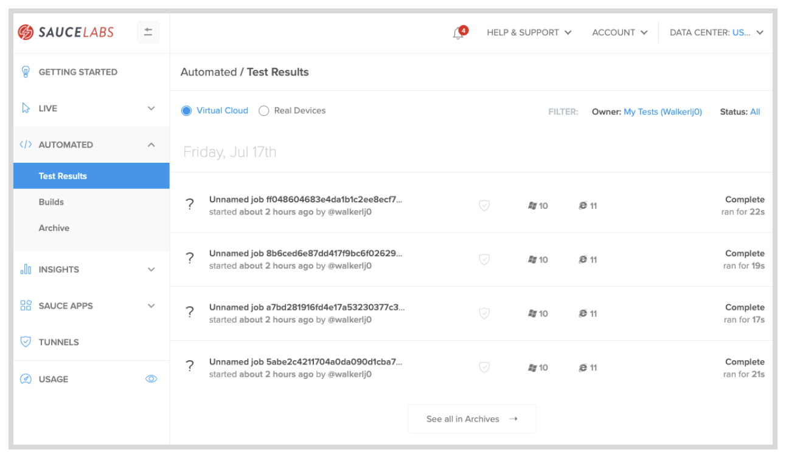
NOTE
–
Final Code
The complete code can be found here. Your final code will look like this:
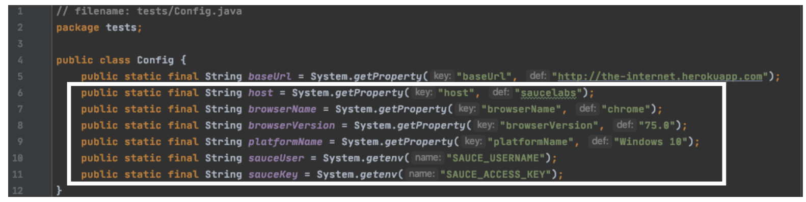
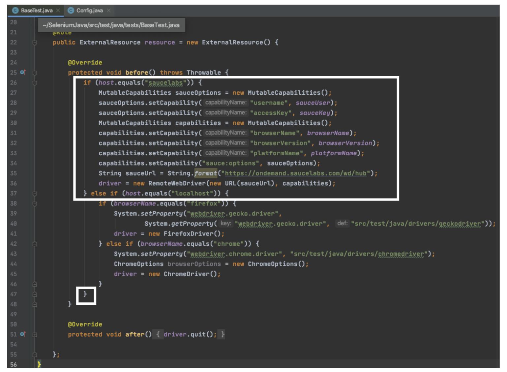
In this lesson you will add in some elements for better reporting to understand the status of test run on the Sauce Labs automated web testing platform.
Now that your tests are up and running on the Sauce Labs platform, you'll notice it's hard to tell one apart from the other. The tests you should have run will show up as Unnamed job with a hash identifier- not easy to use for testing and debugging.
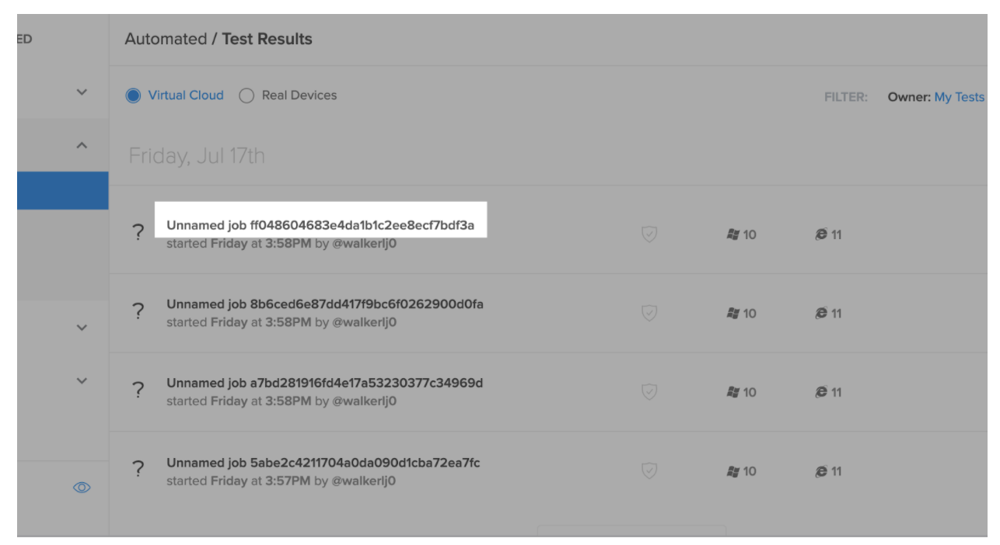
To fix this issue, you can pull in the name and the status from the test and send it to the Sauce Labs dashboard so you can use our tests to effectively debug and improve our application.
In addition, right now regardless of the outcome of a test, the job in Sauce Labs will register as Finished. Ideally you want to know if the job was a Pass or a Fail. That way we can tell at a glance if a test failed or not. With a couple of tweaks we can make this happen easily enough.
Part 1 Add a Test Name
It's great that our tests are running on Sauce Labs. But we're not done yet because the test name in each Sauce job is getting set to an unnamed job. This makes it extremely challenging to know which tests were run in each job. This code will allow you to pass the test name to Sauce Labs.
InBaseTest you will use another JUnit rule called TestWatcher(). First you will need to create a string variable in theBaseTestclass underneath where you instantiate the driver.
// filename: lib/DriverFactory.js
// ...
private String testName;
// ...
Next, use the TestWatcher()after the second@Overrideannotation, right before the final closing curly braces. It has a method called starting that gives us access to the description of each test as its starting. So yougrab the display name for the test and store it in the testNamestring variable.
// filename: lib/DriverFactory.js
// ...
@Rule
public TestRule watcher = new TestWatcher() {
@Override
protected void starting(Description description) {
testName = description.getDisplayName();
}
};
}
At the top of BaseTest, make sure you import TestRule and TestWatcher and the Description in the list of imports at the top:
// filename: tests/BaseTest.java
// ...
import org.junit.rules.TestRule;
import org.junit.rules.TestWatcher;
import org.junit.runner.Description;
// ...
Now you can add it to Sauce Options in betweenplatformNameafter the accessKey and before the list of Mutable Capabilities:
// filename: tests/BaseTest.java
// ...
sauceOptions.setCapability("name", testName);
// ...
Run mvn clean test -Dhost=saucelabs to see if it works. Now when you run our tests in Sauce Labs, the account dashboard will show the tests running with the name of the test outside of the parentheses, and the class inside of the parentheses:
Add a Test Status
After adding a test name, youwill add in an id and status for each unique test that you create. First, you will need to update our tests. If you noticed before, the only status was Complete or had an Error. You will now add in whether a test has passed or failed.

A _failure _is different from an error. An error means that you test code is erroneous, and you, as the test writer, need to make a change. You should see this error in your terminal output, and if the code is correct to communicate with Sauce Labs, it should be on your dashboard as well. A failure means a test successfully ran, but the conditions it was checking for were not present – in other words, the code for the app isn't as expected or needs fixing.
You'll first need install the saucerest library by adding it to our pom.xmlfile within the <dependencies> tags.
// filename: pom.xml
// ...
<dependency>
<groupId>com.saucelabs</groupId>
<artifactId>saucerest</artifactId>
<version>1.0.40</version>
<scope>test</scope>
</dependency>
// ...
NOTE
–
In the variable list of theBaseTest class (below private string testName;) add in the following:
// filename: tests/BaseTest.java
// ...
private String sessionId;
private SauceREST sauceClient;
// ...
Under the saucelabsdriver instantiation in thebefore() rule instantiate asessionId and sauceClient for when you are running tests on Sauce Labs:
// filename: tests/BaseTest.java
// ...
sessionId = ((RemoteWebDriver) driver).getSessionId().toString();
sauceClient = new SauceREST(sauceUser, sauceKey, DataCenter.US);
// ...
The sessionId is retrieved from the RemoteWebDriver. The sauceClient creates an instance using the Sauce Labs REST API, passing in the username, access key, and data center location. You can change the data center on the Sauce Labs dashboard. Once that is changed, if you would like, go into your code and change the DataCenter option in your code to reflect this.
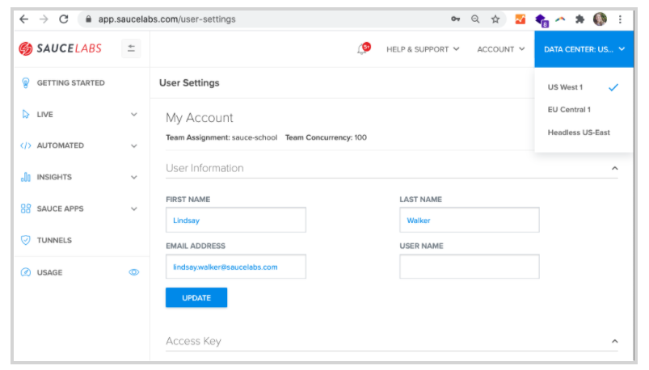
Now you canimport the sauceRest package in theimports list of BaseTest.java:
// filename: tests/BaseTest.java
// ...
import com.saucelabs.saucerest.SauceREST;
// ...
Now, go down to theTestWatcher rule. Under the first@Override annotation, add in two more:
// filename: tests/BaseTest.java
// ...
@Override
protected void failed(Throwable throwable, Description description) {
if (host.equals("saucelabs")) {
sauceClient.jobFailed(sessionId);
System.out.println(String.format("https://saucelabs.com/tests/%s", sessionId));
}
}
@Override
protected void succeeded(Description description) {
if (host.equals("saucelabs")) {
sauceClient.jobPassed(sessionId);
}
}
// ...
Once a Sauce job is established we're able to get the session ID from RemoteWebDriver and store it's string value insessionId. youthen create an instance of SauceREST (which connects to the Sauce API) and store the session in sauceClient.
With a conditional check in each you make sure the sauceClient commands only trigger when a Sauce session has been established.
When a test is successful the succeeded() method will fire, marking the Sauce job for the test as passed. When a test fails the failed method will trigger, and the job will be marked as failed. When there's a failure, we'll want to know the URL to view the job on SauceLabs so you concatenate the URL and output it to the console using the System.out.println command.
Now when you run mvn clean test -Dhost=saucelabsin terminal, then check your Sauce Labs dashboard. On the right you should be able to see a status of passed with each test.

You can see an example of the completed code here.
Final Code
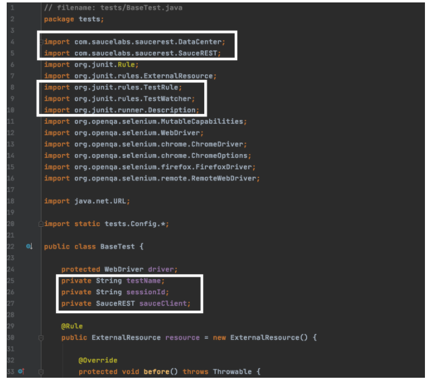
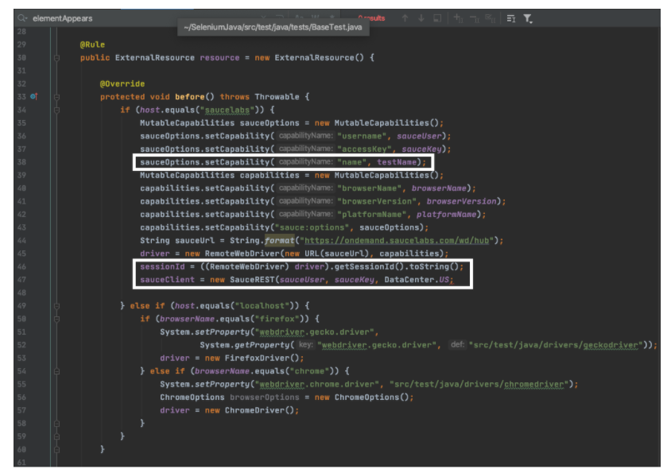

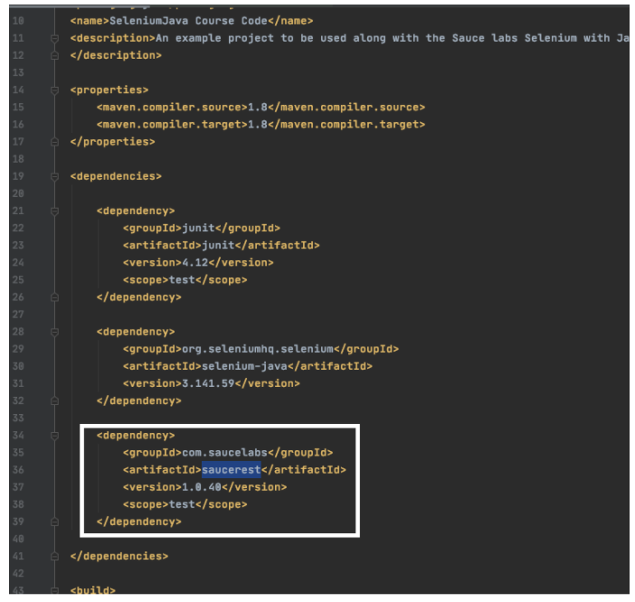